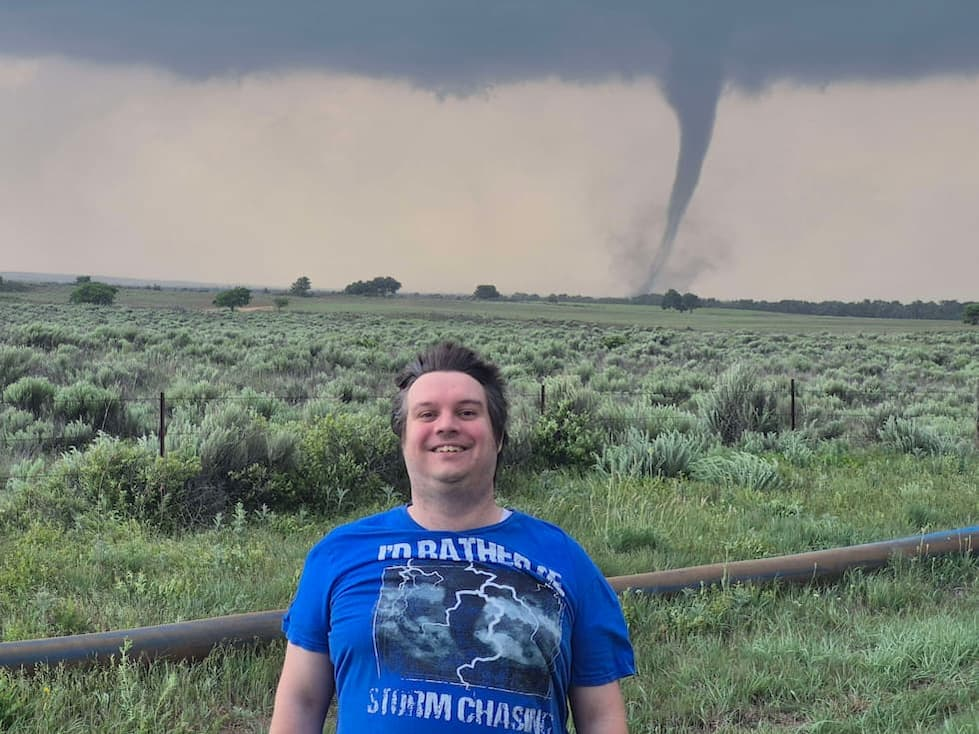

Jacob Gishwiller | WDD 130
Hello! My name is Jacob Gishwiller, and I currently live in the state of Utah, USA. I enjoy studying weather, as I grew up in tornado alley in the state of Nebraska and became a storm chaser. I am currently studying software development through the BYU Pathways program. I’m excited to learn how to program, build websites, and explore the tech industry. I look forward to seeing where the future takes me—whether it’s finding a job or starting my own company.